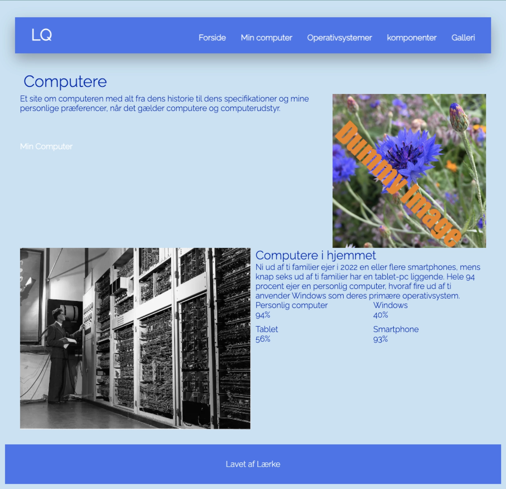
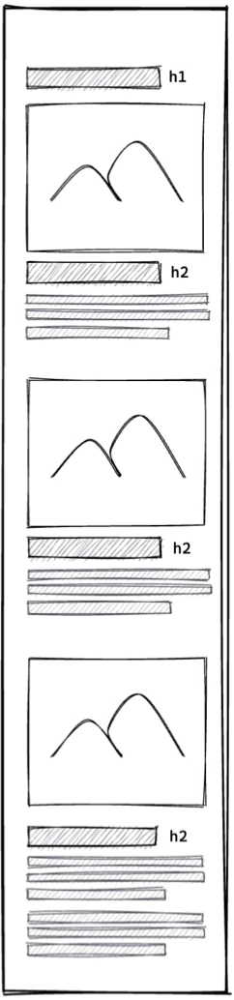

Grundlæggende Web
I forløbet Grundlæggende Web, fik vi stillet til opgave at lave et website der hedder ”Min Computer”. Målet var at opnå en forståelse for basale faglige begreber, som bla. brugergrænseflade, responsivt webdesign og digital indholdsproduktion. Jeg har lært at opsætte en webside i html og css. Derudover har jeg også lært Figma og Fig jam at kende. Vi fik til opgave at designe og kode “mobilefirst” så siden har et responsivt design. Her lærte jeg at arbejde med bla. Media queries, grid, order og flex.
I kodningsprocessen under Operativsystemer lærte jeg at bruge en class der hedder order. Den gør at når man er i mobilsite, f.eks kan have billede først og tekst efter, når siden kommer op i website størrelse kan man putte “order” på og derefter bliver billede og tekst byttet om. “Order” skal på den class man vil bytte om i html, og derefter skal man i css enten skrive order: -1 eller +1 afhængig af hvilken rækkefølge man vil have tingene i.